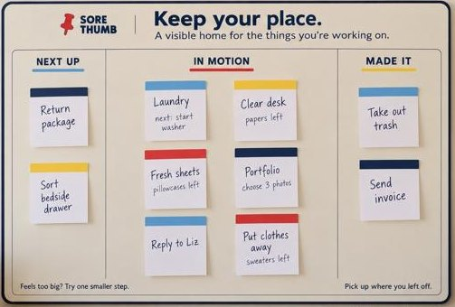

Flow · Consistency
A stage is missing, and another one changed its name.
- What's wrong
- The design has four stages. This board shows three. "Saved for later" got pushed off to a separate notepad called "Out of My Head." The board also says "Next Up" while the design says "Up next."
- Why it matters to the user
- If the board doesn't match the system, people won't know whether a loose idea goes on the board or on the pad. Two names for the same stage make people wonder whether they're two different things.
- What I'd change
- Put all four stages on the board, or decide on purpose that the pad is the "Saved for later" stage and label it that way. Pick one name for each stage and use it everywhere.
What it gets right: the column labels are written out and underlined in color, so status doesn't depend on color alone. "Feels too big? Try one smaller step." is a nice nudge right where people get stuck.